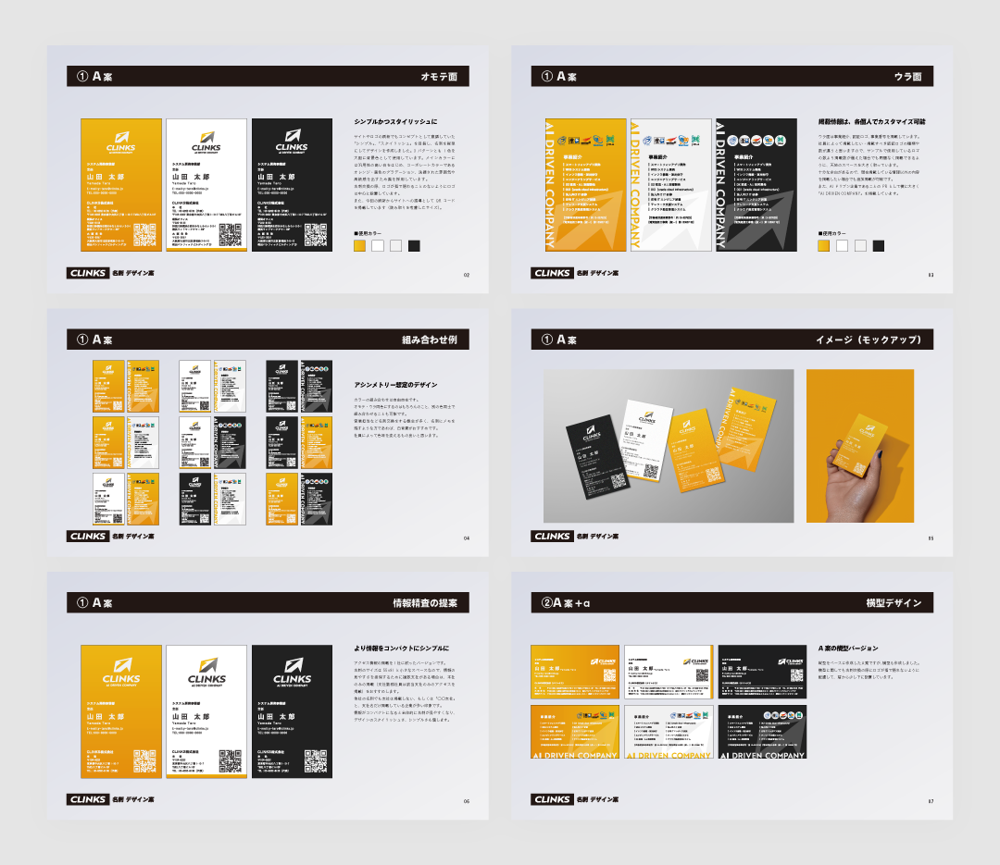

GRAPHIC
IN-HOUSE
名刺

プロジェクトの概要
2024年のロゴ刷新に伴い、会社全体の名刺デザインをリニューアル。新しいブランドイメージの統一を目的として、デザイン案の作成からモック制作、社内調整までを担当しました。役員へのデザイン提案・確認を経て、全社で使用する名刺として展開しています。
課題と解決策
既存の名刺は旧ロゴを基にした横型・単色のデザインで、ブランド刷新後の企業イメージと乖離がある状態でした。また、用途に応じた使い分けができない点も課題でした。そのため、新しいロゴやブランドカラーに合わせてデザインを再設計。縦型・横型のレイアウトに加え、白・オレンジ・黒のカラーパターンを設計し、利用シーンに応じて選択できる仕様にしました。複数パターンのデザイン案・モックを作成し、視認性や印象の違いを比較できる形で提案を行い、ブランドイメージと実用性を両立したデザインへと刷新しています。
